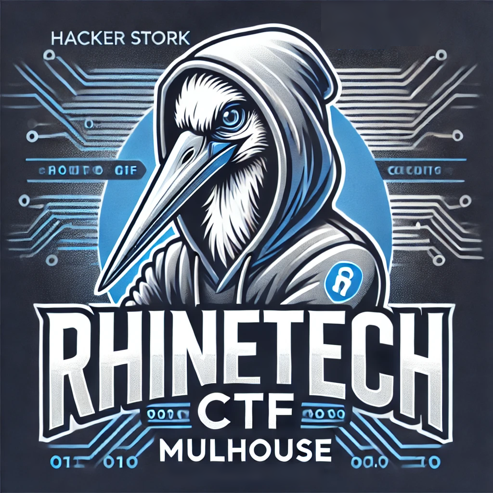
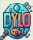

Formation
Diplômes Obtenus
Expériences Professionnelles
Production de Musique (Freelance) (Depuis 2022 - En pause actuellement)
Voir les détails...Stage Maintenance - Labo Servier (2021)
Voir les détails...Challenges & Engagements

🚩 Rhinotec Physical CTF (Edition 2025)
12ème Place / Classement Général
Participation au challenge de cybersécurité physique. Résolution d'énigmes de logique, crochetage et intrusion numérique en temps limité.

🏆 Concours OSI (Projet DYLO)
Présentation devant le jury de l'INSA
Conception d'une micro-hydrolienne (type Vis d'Archimède) pour réduire la facture énergétique d'un village (Monthou-sur-Cher) en respectant la faune et la flore.
Mon Rôle (Électronique) :
- Intégration moteur et calculs de rendement énergétique.
- Programmation Arduino pour le monitoring (Capteurs tension/courant & Affichage LCD).